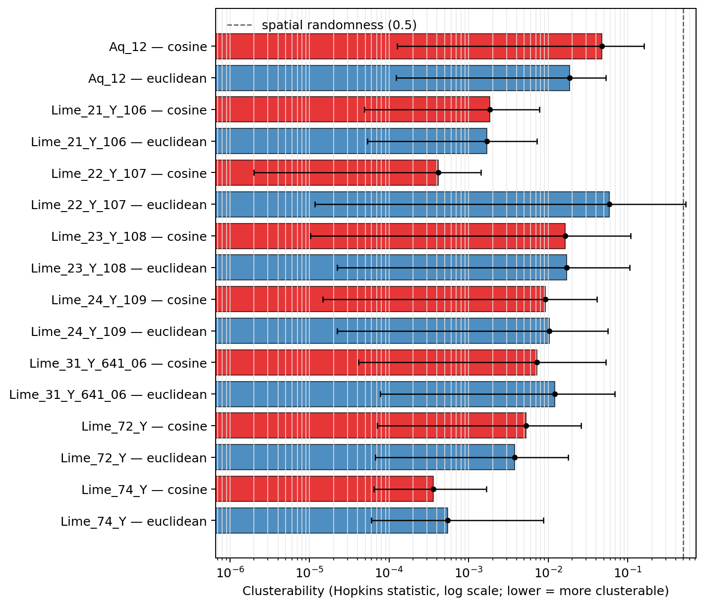

← all families
Points are colored by HDBSCAN cluster. Open any interactive plot to pan, zoom, and inspect syllable metadata.
Lower values indicate stronger clusterability; 0.5 represents spatial randomness.

Download Hopkins summary